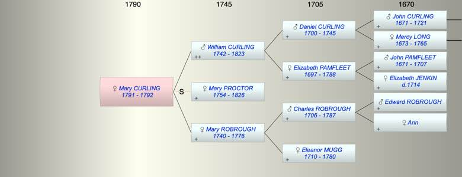

| [Index] |
| Mary Ann CURLING (1791 - 1792) |
|  |
| b. 22 Jul 1791 at City of London |
| d. 1792 at City of London aged 1 |
| Parents: |
| William CURLING (1742 - 1823) |
| Mary ROBROUGH (1740 - 1776) |
| Events in Mary Ann CURLING (1791 - 1792)'s life | |||||
| Date | Age | Event | Place | Notes | Src |
| 1776 | Death of mother Mary ROBROUGH (aged 36) | Southwark | Note 1 | ||
| 22 Jul 1791 | Mary Ann CURLING was born | City of London | Note 2 | ||
| 1792 | 1 | Mary Ann CURLING died | City of London | Note 3 | |
| Created on a Mac™ using iFamily for Mac™ on 8 Oct 2023 |